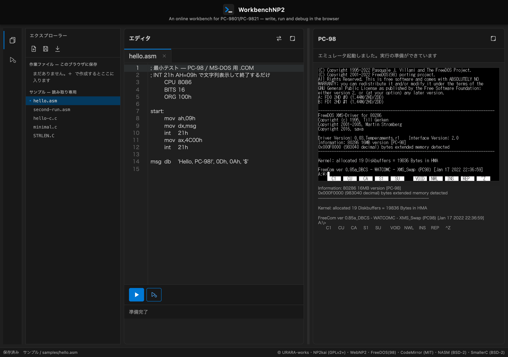
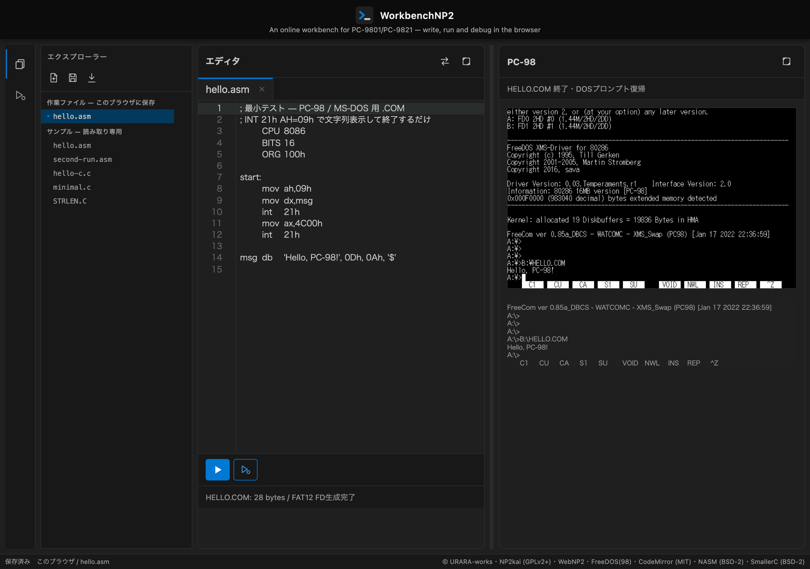
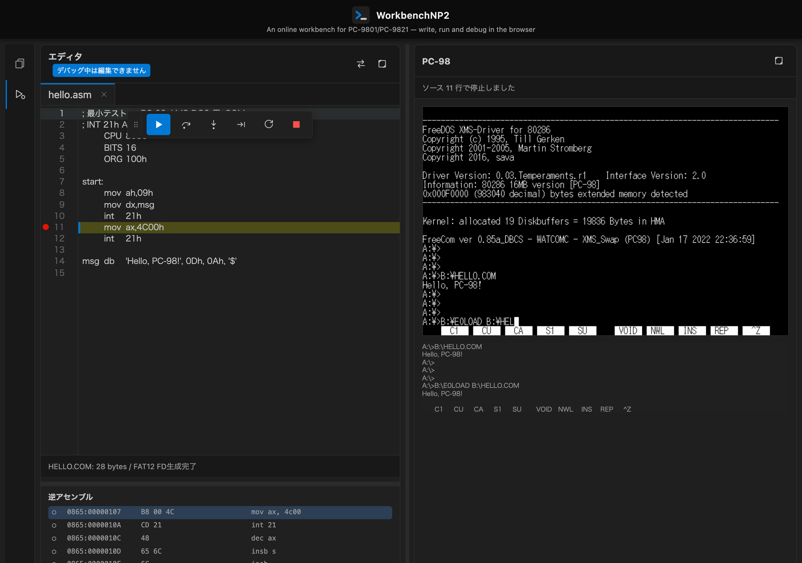

WorkbenchNP2 とはWhat is WorkbenchNP2?
WorkbenchNP2 は、ブラウザだけで PC-98 向けのアセンブラ／C を書き、実行し、 ソース行単位でデバッグできる実験的な開発環境です。インストールも会員登録も不要で、 このページを開けばすぐに使えます。
実行基盤には NP2kai（WebNP2 として wasm 化した Neko Project II 系エミュレータ）を 使い、アセンブラには NASM、C コンパイラには SmallerC、 動作させる OS には FreeDOS(98) を使っています。書いたコードはブラウザ内で その場でアセンブル／コンパイルされ、フロッピーディスクイメージに変換されて、 すぐ隣の PC-98 画面で実行されます。
WorkbenchNP2 is an experimental development environment that lets you write PC-98 assembly or C, run it, and debug it line by line — entirely in your browser. No install, no sign-up: open this page and you're ready to go.
It runs on NP2kai (the same Neko Project II-derived emulator core used by WebNP2, compiled to wasm), assembles with NASM, compiles C with SmallerC, and boots FreeDOS(98) as the guest OS. Your source is assembled or compiled on the spot in your browser, packaged into a floppy disk image, and run on the PC-98 screen right next to the editor.

使い方How to use it
- 左のエクスプローラーからサンプル（
hello.asmなど）を開くか、 新規ファイルを作ります。 - エディタ下のツールバーの実行ボタン（▷）を押すと、ビルドして 右の PC-98 画面で実行します。
- 行番号の余白（gutter）をクリックすると、その行に ブレークポイントが付きます（付けられるのは実際にコードが生成される行だけです）。
- デバッグボタンを押すと、対象の1命令目の手前で止まった状態で デバッグを開始します。左のサイドバーにレジスタとブレークポイントの一覧が出ます。
- Open a sample (e.g.
hello.asm) from the Explorer on the left, or create a new file. - Press the Run button (▷) in the toolbar below the editor to build and run it on the PC-98 screen on the right.
- Click the gutter next to a line number to set a breakpoint there (only lines that actually generate code can take one).
- Press the Debug button to start debugging, stopped right before the target's first instruction. The sidebar on the left shows registers and your breakpoint list.


ファイルと保存Files and saving
エクスプローラーは 「作業ファイル」 と 「サンプル」 の 2 グループに分かれています。
「サンプル」は読み取り専用です。編集して保存すると、サンプル自体は
書き換わらず、同じ内容が「作業ファイル」側へ複製されます
（例: samples/hello.asm を編集して保存すると hello.asm という
作業ファイルができます）。
The Explorer has two groups: "Work files" and "Samples."
Samples are read-only. Editing and saving one does not change the
sample itself — it copies the content into a work file instead (e.g.
editing and saving samples/hello.asm creates a work file named
hello.asm).
制約Limitations
- 1 ファイル＝1 プログラムです。複数のファイルをまとめて 1 つのプログラムとしてビルドすることはできません。
#includeできるのは同梱の標準ヘッダのみです。 利用者が作成した別ファイルをヘッダとして読み込むことはできません。- 扱えるファイルの拡張子は
.asmと.cの 2 種類だけです。
- One file equals one program. You cannot combine several files into a single build.
#includeonly works for the bundled standard headers. A header file you write yourself cannot be included.- Only two file extensions are supported:
.asmand.c.
キーボードショートカットKeyboard shortcuts
次のキーが登録されています。
The following keys are registered:
| キーKey | 動作Action |
|---|---|
| F5 | 続行 — ブレークポイントまで実行する（デバッグ中のみ）Continue — run until the next breakpoint (while debugging only) |
| F10 | ステップオーバー — 次のソース行まで実行する。call は飛び越える（デバッグ中のみ）Step over — run to the next source line, stepping over calls (while debugging only) |
| F11 | ステップイン — call なら呼び先へ入る（デバッグ中のみ）Step into — enters a call's target (while debugging only) |
| Enter | 新規ファイルのポップアップで、入力した名前でファイルを作成するIn the new-file popup, creates the file with the entered name |
| Esc | 新規ファイルのポップアップを閉じるCloses the new-file popup |
| ← / → | エディタとPC-98画面の境界（スプリッタ）にフォーカスがあるとき、幅を16pxずつ調整するWith the editor/PC-98 splitter focused, adjusts the width by 16px per press |
| Home | スプリッタまたはデバッグツールバーのつまみにフォーカスがあるとき、既定の位置へ戻すWith the splitter or the debug toolbar's grip focused, resets it to its default position |
クレジットと権利についてCredits and rights
WorkbenchNP2 は次のソフトウェアを利用・同梱しています。
- NP2kai（Neko Project II 系）— GPLv2 以降
- WebNP2 — NP2kai を wasm 化し、ブラウザ向けにホストする姉妹プロジェクト
- FreeDOS(98) — ゲスト OS として同梱
- CodeMirror — エディタ（MIT）
- NASM — アセンブラ（BSD 2-Clause）
- SmallerC — C コンパイラ（BSD 2-Clause）
各ライセンスの詳細は、アプリ画面下部のステータスバーにあるリンクから参照できます。
PC-9801、PC-9821 は日本電気株式会社（NEC）の商標です。 本プロジェクトは NEC とは関係がなく、NEC による承認・提携・協賛を受けたものでもありません。
本プロジェクトは実行基盤として NP2kai（Neko Project II 系）を ビルドし同梱しています。NP2kai および Neko Project II の作者とも関係がなく、 公認を受けたものではありません。
WorkbenchNP2 uses and bundles the following software.
- NP2kai (a Neko Project II derivative) — GPLv2 or later
- WebNP2 — the sister project that compiles NP2kai to wasm and hosts it in the browser
- FreeDOS(98) — bundled as the guest OS
- CodeMirror — the editor (MIT)
- NASM — the assembler (BSD 2-Clause)
- SmallerC — the C compiler (BSD 2-Clause)
Full license texts are linked from the status bar at the bottom of the app.
PC-9801 and PC-9821 are trademarks of NEC Corporation. This project has no relationship with NEC, and is not approved, affiliated with, or sponsored by NEC.
This project builds and bundles NP2kai (a Neko Project II derivative) as its execution engine. It has no relationship with the authors of NP2kai or Neko Project II, and is not an officially endorsed derivative.